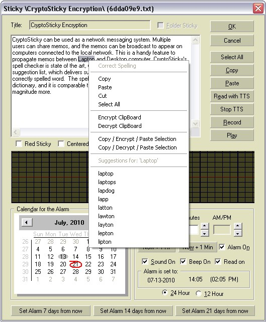

|
Editing a
CryptoSticky Memo
CryptoSticky allows one
to
re-use any previously created memo. All fields can be edited. New
alarms can be set, memo
parameters can be augmented. With a single click, one can make a memo
into attention grabbing red memo, or a memo that stays 'on top' of
every other window. Recording a voice memo is as easy as point and
click. CryptoStickycan also read your memo with Windows text to speech
facility. This is an invaluable tool when crafting new memos, as
one can fine tune the contents of the memo by listening to 'how
it sounds', thus allowing the creator to perceive if the intent of the
memo is communicated well.

|
On
the
screen
shot
to the left, we double clicked the memo titled Hello
World'. The memo editing screen showed, with the current memo
details pre-filled.
Every field of the memo
can be edited freely. One can set a new alarm, make the memo a special
red memo
(for attention grabbing), make the memo a 'persistent memo' (the on top
feature). When the memo is set as 'persist on top' it will not be
covered by other application windows. This assures that the memo is
always in front of you, for a safe and sure reminder. With the
transparency feature, this is an ideal reminder that does not distract
you from your normal computing tasks.
One can record a voice memo in this dialog. Just press the record
key. To end your recording press the 'Record' key again, or you can
press 'Play' to stop recording and instantly review the recording. The
waveform window gives you visual feedback and allows you to edit the
wave. You can select any portion of the wave, cut / paste / crop
/delete any portion of the wave as you see fit. When recording
multiple times, the recorder appends the new wave to the end of your
previous recording.
The 'Select All' button's operation allows one to select
the
text in the panel's main entry window. The copy button puts the
selected contents to the clipboard. The paste button pastes the
clipboard contents into the current insertion point at the cursor.
When checking the 'Folder Memo' check box, the memo will be
created as a sub-memo of the current selection. When the dialog is
shown in editing mode, the 'Folder memo' check box is grayed out
When setting a new alarm, one can specify the alarm's
parameters. This is on a per alarm (per memo) basis. CryptoSticky
alarms
can be specified with a speaker sound, with a system beep or any
combination of
speaker sound and system beep. |
Pressing 'Cancel' will
discard all the changes made to this
memo. A Yes/No dialog will appear to confirm one's intention.
Pressing OK will save the alarm, and evaluate the alarm
queue. The
alarm queue will be set to the next chronologically ordered memo.
|
|
On the
screen shot to the right one can observe the spell checker in action.
We spelled the 'computer' and a subtle red underline (squiggly)
appeared. When right clicking on the word, a generous but appropriate
set of suggestions are shown. The spell checker's highlight only
operates on the current line, thus no 'squiggles' are scattered over
the document. (Notice that 'CryptoSticky' is not in a dictionary, and
it is flagged as well.
Any word can be right clicked for suggestions, without regard to
its spelling status. This is most useful on spelling words that are
similar to each other or looking for suggestions on a particular word.
The right click menu contains menu items to cut/copy/paste the
current selection. It also contains items that add the current word to
the dictionary, or ignore the word. The ignored word is ignored for
this session only.
When the user adds a new word to the dictionary, it is saved
into a user dictionary. The user dictionary is plain text, and can be
freely edited under 'USERDATA\CryptoSticky\spell.cus'
Both the title and the main body text are spell
check capable entry fields. The spell check activates after a second
of inactivity, thus it never interferes with the user's typing.
For your convenience alarm shortcuts are added for one
minute, one hour, one week. The alarms can also be set to a
fortnight and three weeks. The alarm time in those cases are derived
from the current time of pressing those buttons.
|
|
 |
The CryptoSticky text editor can encrypt portions of the
text. Select the portion you want to encrypt, right click, and the menu
(pictured above) shows. Select 'Encrpt' for encryption, 'Decrypt' for
dectyption, and enter password / key to use. Make sure you remember the
key, as it is needed for the decryption of the text. You can copy -
encrypt - paste with a single click by selecting the 'Copy / Encrypt /
Paste' menu item. This effectively replaces your current selection with
the encrypted / decrypted version of the text. Just one more way
CryptoSticky can be useful.
Copyright © by
RobotMonkeySoftware |